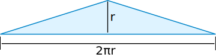

Area of a Circle by Lines
Have a look at this:
A circle becomes a triangle! And the area is:

Area = base × height / 2
Area = 2πr × r / 2
Area = πr2
Conclusion
Area of Circle = πr2
Also notice:
| Circumference of 2πr | → | Area of πr2 |
Things to Try
Try a low value for "sides":
- you can see that the lengths don't change as they unfold into straight line segments
- also notice they are actually polygons, which head towards being circles as the number of sides increase
Also try increasing the value of "lines" to convince yourself that the lines are heading towards filling the whole area.